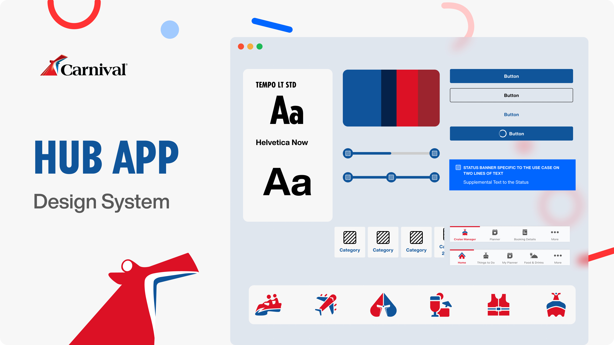
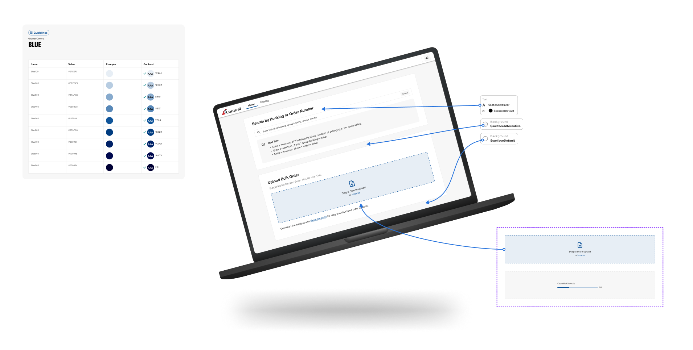
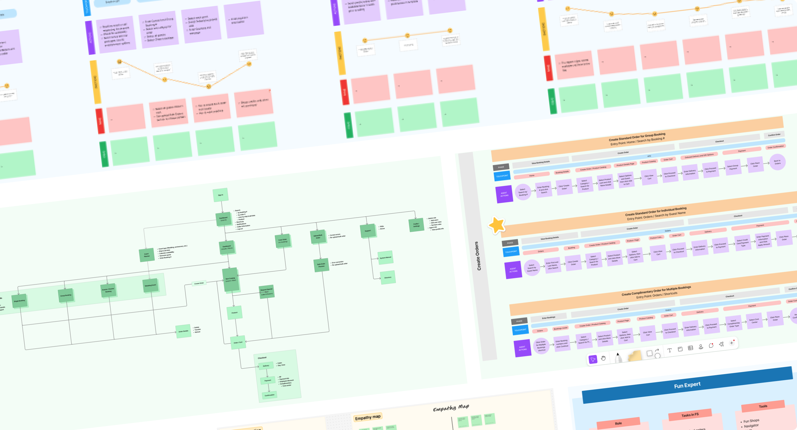
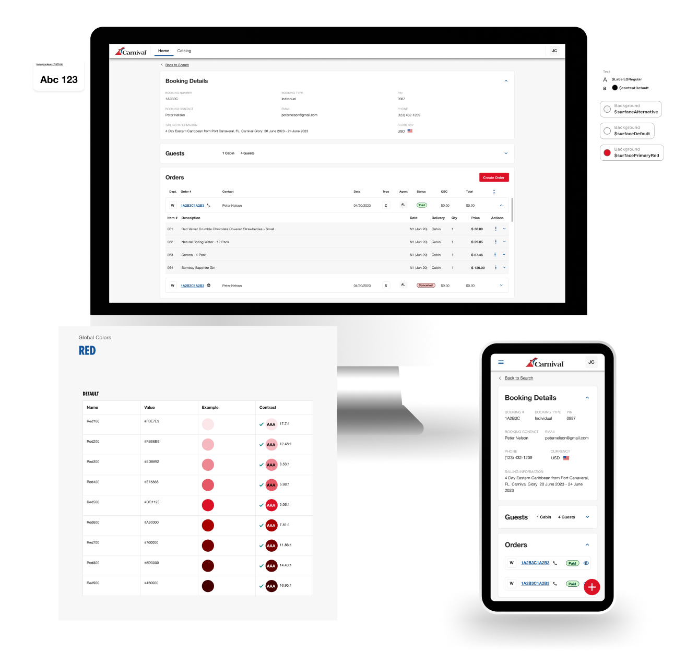

Carnival Cruise Lines is one of the world’s leading cruise operators, providing joyful vacation experiences to millions of guests every year.
Their digital ecosystem serves both end customers and internal agents, ensuring seamless booking, order management, and post-purchase support across multiple channels.
As part of their digital transformation strategy, the company aimed to unify its fragmented tools into a cohesive, scalable platform one that enables efficiency, consistency, and delightful user experiences from shore to ship.
Carnival needed to redesign and centralize its order management system an internal eCommerce platform used by call center agents to create, modify, and manage guest orders in real-time.
The challenge was to streamline the entire end-to-end journey (from catalog search to order completion and after-sales modifications) while maintaining accuracy and consistency across multiple systems.
Additionally, the project required a strategic design framework to ensure that all digital products web, internal tools, and guest-facing applications—shared a unified visual and interaction language.

To design an end-to-end Order Management and eCommerce platform that enables Carnival Cruise agents to efficiently manage guest transactions while ensuring a consistent, accessible, and delightful experience across all digital products through a unified design system.
As the Senior UX/UI and Product Designer, my role combined strategy, consultancy, and execution:

